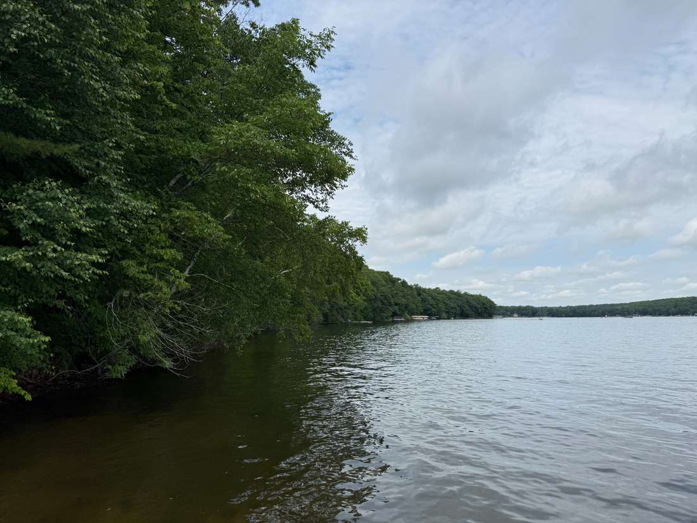

Key Dates
Open Book, Board of Review, notice deadlines, and what to do before each date.
See deadlinesA community-created resource for Town of Maple Plain property owners who want to understand the 2026 reassessment, document what changed, prepare evidence, and protect their appeal rights.
Independent community resource. Not affiliated with the Town of Maple Plain, City of Cumberland, Barron County, Kleven Property Assessment, or the Wisconsin Department of Revenue. Informational only, not legal advice.
Each major task now has its own page so residents can jump directly to the information they need and share a specific page with a neighbor.
Open Book, Board of Review, notice deadlines, and what to do before each date.
See deadlinesA step-by-step Wisconsin assessment appeal roadmap, including the formal Board of Review process.
See the processWhat to gather, what makes a useful comparable, and how to build a clear evidence packet.
Build my packetTown officials, assessor contacts, Wisconsin DOR, official forms, and escalation resources.
Find contactsSubmit your numbers and property characteristics so community patterns can be measured with real data.
Share my dataA fact-based, printer-friendly checklist you can bring to Open Book or use while preparing for Board of Review.
Open the guideA dramatic increase does not automatically prove an assessment is wrong. What matters is whether the assessed value reflects the property's market value under Wisconsin law and whether the underlying property facts and comparable sales actually support that value.
This project is designed to help residents ask better questions, preserve deadlines, share non-identifying community data, and arrive at Open Book and Board of Review prepared.

Add your old and new values plus basic property facts. The form calculates the percentage change automatically.
Share your assessment →Ask the assessor to explain the valuation and request the property record card, comparable sales, and methodology. Contact the Town Clerk to protect appeal deadlines.
Get contact information →Put the assessment notice, prior value, photos, comparable sales, and every contact attempt in one place now.
Build the evidence packet →